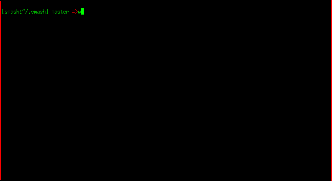

Autojump | Handle Command Failure | Do What I Mean | Change-dir Hooks | Python Tools Completion | Python Virtual Environments
The smash core aims to be small and only include the essentials, so much of the behaviour of shell comes down to plugins. In Smash, "plugins" are just IPython extensions which require smashlib, and possibly require the smash shell itself. As a result many of the plugins may work in vanilla IPython. If you don't care about the built in plugin options and only want to write new plugins, see this section. There are a few main things that plugins may potentially do. Specifically, each plugin may:
- have configuration options
- publish commands or command aliases
- add completers or new input preprocessing
- receive signals from the IPython event subsystem
- receive signals from the smash-specific event subsystem
- send signals on the smash-specific event subsystem
The rest of this page attempts to completely describe the plugins which ship with smash, although note that these plugins may not be enabled by default.
Handle Command Failure
This plugin receives a signal whenever a system command fails, where the signal contains information about both the full command and the exit code. Note that this is happens all the time since "ls /does/not/exist" terminates with a non-zero exit status, but this may interest plugin implementors.
Signals
Receives: COMMAND_FAIL
Enhanced "which"
This plugin augments the system "which" command with a version that knows about python libraries and virtualenvs.

Commands:
which *module_or_cmd*: display information about a system command or python module
Change directory hooks
The CD hooks feature is mostly a service for other plugins to use. It adds a "directory changed" event to smash, which is useful for building stuff like automatic-activation rules (see for example the project manager. New plugins can build hooks and subscribe to CD events, or you can just register a callback without writing a new plugin. Here's a minimal example of what a callback would look like:
def test_change_message(bus, new, old):
""" a demo for the CD hook """
print 'moved from old directory {0} to new one at {1}'.format(old, new)
Configuration Options:
ChangeDirHooks.verbose: set True to see debug messagesChangeDirHooks.change_dir_hooks.append('foo): add python dot-paths or shell commands as cd-hooks
Signals
Publishes: CHANGE_DIR
Do What I mean
The DoWhatIMean plugin supports zsh-style alias suffixes, automatic directory changing, opening of urls, etc. For a feature summary, see the input -> action list below.
| On Input | Run test | If test is true Action is |
|---|---|---|
| http://foo/bar | (none) | open with browser |
| ftp://foo/bar | (none) | open with browser |
| ssh://user@host | (none) | run ssh |
| mosh://user@host | (none) | run mosh |
| foo.bar | is foo.bar executable? | run as usual |
| foo.bar | is bar a defined suffix_alias? | open with specified opener |
| foo/bar | is bar a directory? | change-dir to bar |
| foo/bar | is bar editable? | open with editor |
| foo/bar:ROW:COL: | is bar editable? | open with editor |
Configuration Options:
DoWhatIMean.verbose: set True to see debug messagesDoWhatIMean.suffix_aliases: map of{file_extension -> open_command}
Signals
Receives: URL_INPUT, FILE_INPUT
Virtual Environment
Smash has sophisticated virtualenv support which is useful particularly if you're working on multiple projects or working with multiple versions of the same requirements. Activating/deactivating venvs is done with venv_activate some_dir and venv_deactivate, respectively. This not only updates your $PATH, but updates the python runtime. Modules from the new environment can now be imported directly, and side-effects from the old virtualenv are purged. To activate and deactivate virtualenv's automatically, take a look at the project manager documentation.
Commands:
venv_activate some_dir: activate a specific virtual environmentvenv_deactivate some_dir: deactivates the current virtual environment
Configuration Options:
VirtualEnv.verbose: set True to see debug messages
Signals
Writing new plugins
Writing new plugins is fairly easy, but may not be necessary for your application (see the configuration summary or the main configuration documentation). If you do need to write a plugin, read on, but first a bit of background. Smash is built on top of IPython and is in fact itself an IPython extension. Smash plugins are essentially ipython extensions which require smash, but it can be useful to differentiate the terminology. Before going much further it's probably a good idea to check out the existing IPython docs on writing extensions.
If you want to do simple stuff like just writing new commands then a tutorials for writing IPython magic will probably be all you need.
If you want to get your hooks into smash-specific events like "directory change" or "virtual environment deactived" then read this documentation about the smash event system. For an example of writing new tab-completion stuff, check out the code for the fabric completer. For an example of input preprocessing see the code for the currency converter. For an example of all-else-fails input processing (meaning input was neither bash nor python) see the code for the do-what-i-mean plugin